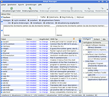
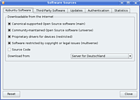

Wiki
Mitmachen
- Wikiartikel anlegen
- Howto anlegen
- Wiki-Referenz
- Wiki-Syntax
- Baustellen
- Artikelideen
- Ungetestete Artikel
- Ausbaufähige Artikel
- Fehlerhafte Artikel
- Rund ums Wiki
Konfiguration
- Backlinks anzeigen
- Exportieren
Adept Manager
Archivierte Anleitung
Dieser Artikel wurde archiviert, da er - oder Teile daraus - nur noch unter einer älteren Ubuntu-Version nutzbar ist. Diese Anleitung wird vom Wiki-Team weder auf Richtigkeit überprüft noch anderweitig gepflegt. Zusätzlich wurde der Artikel für weitere Änderungen gesperrt.
Anmerkung: Dieser Artikel ist veraltet, eine Alternative ist der Artikel Softwareverwaltung KDE
Hinweis:
Dieser Artikel beschreibt das Programm Adept Manager unter Kubuntu 8.04. Für Kubuntu 8.10 siehe Adept 3. Adept wird nicht mehr weiterentwickelt, an seine Stelle tritt ab Ubuntu 9.04 die Softwareverwaltung KDE.
Zum Verständnis dieses Artikels sind folgende Seiten hilfreich:
Installation von Programmen, optional
Der Adept Manager richtet sich an erfahrenere Anwender und ist ein Programm zur grafischen Paketverwaltung unter Kubuntu/KDE. Es dient als Oberfläche für APT, mit der Aufgabe, die Paketverwaltung komfortabel zu gestalten.
Für Einsteiger gibt es zudem zum Installieren neuer Programme den Adept Installer und zum Aktualisieren des Systems den Adept Updater.
Der Adept Manager befindet sich im K-Menü unter
"System -> Adept Manager - Paketverwaltung"
Zum Start muss das Passwort eingegeben werden. So wird die unbefugte oder unbeabsichtigte Installation oder Deinstallation von Programmen verhindert.
Softwareverwaltung¶
Programme installieren¶
Ein Programm zu installieren ist eigentlich ganz leicht: Kennt man den Namen des Paketes, kann man diesen oben in das Suchfeld eintippen.  Die Suche startet schon mit dem ersten eingegebenen Buchstaben und verfeinert sich mit jedem weiteren. Sollte das Paket wider Erwarten nicht gefunden werden, muss man eventuell noch weitere Paketquellen freischalten.
In der Liste im unteren Bereich kann man durch einen Klick auf den Paketnamen bzw. den blauen Pfeil am linken Rand weitere Informationen zum Paket anschauen. Möchte man das Paket installieren, so klickt man auf die Schaltfläche "Installation anfordern". Alternativ kann man auch mit der rechten Maustaste ein Paket auswählen und im Kontextmenü "Request Install" auswählen. Alle notwendigen Abhängigkeiten werden damit automatisch zur Installation markiert.
Zur Installation der vorgemerkten Pakete klickt man in der Symbolleiste auf "Änderungen anwenden". Möchte man sich vergewissern, dass auch die richtigen Pakete installiert bzw. entfernt werden, sollte man in der Symbolleiste auf "Änderungsvorschau" klicken.
Achtung!
Es kann auch vorkommen, dass Pakete entfernt werden sollen, weil diese zum Beispiel in Konflikt mit einem anderen stehen. Man sollte sich also genau durchlesen, was in diesem Dialog steht!
Pakete neuinstallieren¶
Möchte man ein bereits installiertes Paket neuinstallieren, kann man dies mit "Rechtsklick" -> "Request Reinstall" tun.
Pakete entfernen¶
Um ein Paket zu entfernen, klickt man dieses einfach in der Übersichtsliste an und wählt dann die Schaltfläche "Entfernung anfordern" oder alternativ per Rechtsklick im Kontextmenü "Request Removal".
Hinweis:
Wichtig: Beim einfachen Entfernen eines Paketes bleiben Konfigurationsdateien - z. B. in /etc - zurück. Möchte man dies verhindern, entfernd man das Paket mit "Rechtsklick" -> "Request Purging". Dies löscht alles, inklusive der Konfigurationsdateien. Dateien in den Homeverzeichnissen der Benutzer bleiben davon natürlich unberührt. Die Paketverwaltung wird nie Daten aus /home löschen!
Automatisch installierte Abhängigkeiten entfernen¶
Im Gegensatz zu aptitude und apt-get werden im Adept Manager automatisch installierte, abhängige Pakete nicht entfernt, wenn man das Ursprungspaket deinstalliert. Hier kann man sich aber helfen, indem man das entsprechende Paket in der Paketliste anklickt und auf die Schaltfläche "Details" betätigt. Unter dem Reiter "Paketbeziehungen" werden dort alle Pakete aufgelistet, mit denen das Ursprungspaket in Beziehung steht. Auf diese Art und Weise kann man nachverfolgen, welche Pakete als Abhängigkeiten zusätzlich installiert wurden und sie manuell entfernen.
Defekte Pakete reparieren¶
Ab und zu kann es passieren, dass "kaputte" Pakete gemeldet werden, wenn man ein Paket manuell installiert ohne dessen Abhängigkeiten zu erfüllen. In diesem Fall sucht man das Paket heraus (Bei "Status" erscheint "KAPUTT"!) und klickt auf "Installation anfordern". Sollte sich der Status des Paketes nicht ändern, so konnten nicht alle Abhängigkeiten aufgelöst werden. Hier muss man entweder die notwendigen Paketquellen freischalten oder das Paket wieder entfernen.
Paketverwaltung¶
 Die Paketquellen kann man im Adept Manager über das Menü "Adept -> Paketquellen verwalten" konfigurieren.
Allgemeine Informationen zu den Paketquellen findet man hier. Diesen Artikel sollte man sich vor dem Fortfahren durchgelesen haben.
Standardquellen nutzen¶
Die Standardquellen werden im Fenster für die Paketverwaltung über den Reiter "Software von Kubuntu" konfiguriert. Nach der Installation sind die Quellen für main, restricted, universe und multiverse schon eingetragen und seit Feisty auch aktiviert. Möchte man dies ändern, können die Quellen einfach deaktiviert werden, indem man das Häkchen beim entsprechenden Eintrag entfernt. Wenn Änderungen vorgenommen wurden, wird man nach dem Schließen des Fensters aufgefordert, die Paketquellen neu einzulesen, was man mit einem Klick auf "Neu laden" auch tun sollte. Ansonsten kann dies jeder Zeit mit einem Klick auf "Aktualisierungen holen" nachgeholt werden.
Experten-Info:
Man kann hier auch Ubuntu Source-Paketquellen über den Punkt "Quelltext" aktivieren, was hier genauer erklärt ist, da man diese Quellpakete nur in der Konsole herunterladen kann.
Weitere Paketquellen hinzufügen¶
Gelegentlich wird in Wikiartikeln Software aus weiteren Paketquellen benötigt. Diese Paketquellen sind z.B. in der folgenden Form angegeben:
deb http://archive.czessi.net/ubuntu dapper main restricted universe multiverse
Hinweis!
Zusätzliche Fremdquellen können das System gefährden.
Um diese Quelle beispielsweise einzufügen, öffnet man wie bereits beschrieben das Fenster für die Paketverwaltung und geht zum Reiter "Third-Party Software". Dort klickt man auf "Hinzufügen" und gibt die gewünschte Paketquelle ein.
Nachdem sie eingetragen wurden, sind die Fremdquellen automatisch aktiviert und können, genau wie die Standardquellen auch, wieder deaktiviert werden, indem man das entsprechende Häkchen entfernt. Ebenso wird man nach dem Schließen des Fensters aufgefordert, die Paketquellen neu einzulesen.
Quelle als vertrauenswürdig einstufen¶
Wenn man bei der Paketinstallation aus Fremdquellen nicht immer eine Warnmeldung sehen möchte, dass die Quelle nicht authentifiziert werden kann, empfiehlt es sich diese als vertrauenswürdig einzustufen. Dazu gibt es in den meisten Wiki-Anleitungen (oder alternativ auf den Webseiten der Betreuer) eine GPG-Schlüsseldatei, die man einfach nur herunterladen muss. Wenn vorhanden, können heruntergeladene Authentisierungsschlüssel der neuen Quelle im Fenster für die Paketverwaltung bei dem Reiter "Authentication" mit "Import Key File" hinzugefügt werden. In der Regel wird dies aber über ein Terminal gemacht. Zudem können hier bereits authentisierte Schlüssel entfernt und die Standardeinstellungen (d. h., dass nur die Standardquellen authentisiert sind) über "Restore Defaults" wieder hergestellt werden.
CD/DVD als Paketquelle hinzufügen¶
Um eine CD/DVD als Paketquelle hinzuzufügen, öffnet man wie bereits beschrieben das Fenster für die Paketverwaltung und geht zum Reiter "Third-Party Software". Dann legt man die CD ein, die eingelesen werden soll und klickt auf die Schaltfläche "CD-ROM hinzufügen".
Es ist kein Problem mehrere CD-Quellen einzutragen, auch wenn man nur ein CD-Laufwerk besitzt. Bei Paketen, die auf einer anderen CD liegen, wird man aufgefordert, diese einzulegen.
Updates¶
Um die Handhabung von Kubuntu mit Updates einzustellen, öffnet man wie bereits beschrieben das Fenster für die Paketverwaltung und geht zum Reiter "Updates".
Auswahl der Updates¶
Unter "Aktualsierungen für Kubuntu" kann man einstellen, welche Updates berücksichtigt werden sollen. Neben wichtigen Sicherheitsaktualisierungen und empfohlen Updates können auch vorab veröffentlichte und nicht unterstütze Updates heruntergeladen werden.
Achtung!
Vorab veröffentlichte und nicht unterstütze Updates können die Stabilität des System gefährden!
Automatische Updates¶
Unter "Automatic Updates" kann man das Verhalten des Adept Updaters einstellen. Wenn das Häkchen bei "Check for Updates" entfernt, wird der Adept Updater deaktiviert. Außerdem kann man die Häufigkeit bestimmen, mit der nach neuen Updates gesucht wird. Darunter kann eingestellt werden, wie mit den gefundenen Updates umgegangen werden soll. Man hat drei Optionen:
| Automatic Updates | |
| Option | Beschreibung |
| "Install security updates without confirmation" | Sicherheitsupdates werden hiermit automatisch ohne Nachfrage installiert. |
| "Download all updates in the background" | Hiermit werden alle Updates automatisch im Hintergrund herunterladen. |
| "Only notify about available updates" | Bei neuen Updates wird man nur über den Adept Notifier hingewiesen. |
Was der Adept Manager nicht kann¶
Leider fehlen dem Adept Manager im Vergleich zu Synaptic einige Features. So kann man keine Versionen eines Paketes sperren oder erzwingen, hier muss man sich mit Apt-Pinning behelfen. Außerdem können Pakete nicht konfiguriert werden, heruntergeladene Pakete kann man nicht automatisch entfernen lassen und man kann keine Paketlisten erstellen. Hier muss man entweder APT über ein Terminal bedienen oder man nutzt einfach Synaptic. Nach der Installation [1] befindet es sich im K-Menü unter
"System -> Synaptic-Paketverwaltung"
Weiterführende Informationen bietet der Artikel Synaptic.
Diese Revision wurde am 6. Juni 2011 21:23 von kaputtnik erstellt.
- Erstellt mit Inyoka
-
 2004 – 2017 ubuntuusers.de • Einige Rechte vorbehalten
2004 – 2017 ubuntuusers.de • Einige Rechte vorbehalten
Lizenz • Kontakt • Datenschutz • Impressum • Serverstatus -
Serverhousing gespendet von